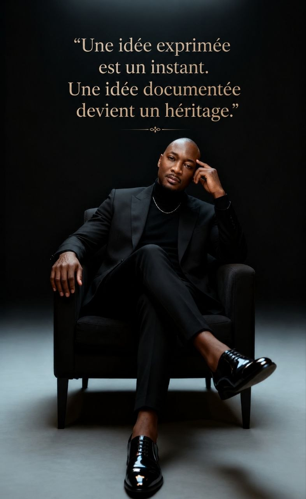

A culture of rigorous reasoning, in service of Cameroon.
The LCIR (Cameroonian Laboratory for the Engineering of Reasoning) is an independent research space dedicated to the rigorous analysis of Cameroon's economic, institutional and social transformations.
This statement does not claim that reasoning is the only condition for development. It affirms that no public policy, no economic strategy, no institutional reform, no technological innovation and no societal project can produce lasting effects if the mechanisms of reflection that precede them remain fragile.
Reasoning is the invisible infrastructure of all other infrastructures.
Exceptional human capital. A persistent paradox.
Every year, thousands of Cameroonian women and men distinguish themselves in universities, administrations, companies, laboratories, international institutions, the arts and entrepreneurial ventures.
This intellectual wealth is one of our country's greatest assets. Yet a paradox remains: the quality of our human capital does not always translate into an equivalent quality of our debates, our collective decisions or our ability to build a shared vision of the great national issues.
This observation targets no generation, profession, institution or political current. It is an invitation to reflect.
It is to answer this question that the Cameroonian Laboratory for the Engineering of Reasoning was created.
Building a culture of rigorous reasoning in service of Cameroon.
This mission is built around four commitments.
Observe, understand, build — without haste or oversimplification.
The LCIR always distinguishes established facts from hypotheses. Its analyses remain open to documented contradiction — the goal is never to settle a debate with a slogan, but to connect decisions often examined separately, to check whether together they form a coherent architecture.
What the LCIR asserts, and what it does not claim to prove.
The LCIR does not seek to produce a new ideology. It defends no political party. It follows no partisan logic. Its purpose is methodological.
Our ambition is not to tell citizens what to think. Our ambition is to offer tools to think better — because a society that improves the quality of its reasoning naturally improves the quality of its decisions.
The Cameroonian Reasoning Workshop.
This programme is the framework for disseminating the LCIR's work. Its ambition is to promote a culture of reflection in which every citizen is invited to:
before concluding;
before judging;
before destroying.
This approach rests on an essential conviction: reasoning is a skill that can be developed, transmitted, improved and put at the service of the common good.

We dream of a Cameroon where the quality of public debate reflects the quality of its people's intelligence. A Cameroon where disagreements become opportunities for learning rather than reasons for division.
The LCIR commits to pursuing this mission with scientific rigour, intellectual humility and a permanent openness to dialogue. For reasoning is not a fixed truth: it is a living discipline, refined as our understanding of the human being and of society advances.
The LCIR is an invitation to build a nation that places the quality of its reasoning at the heart of its development.